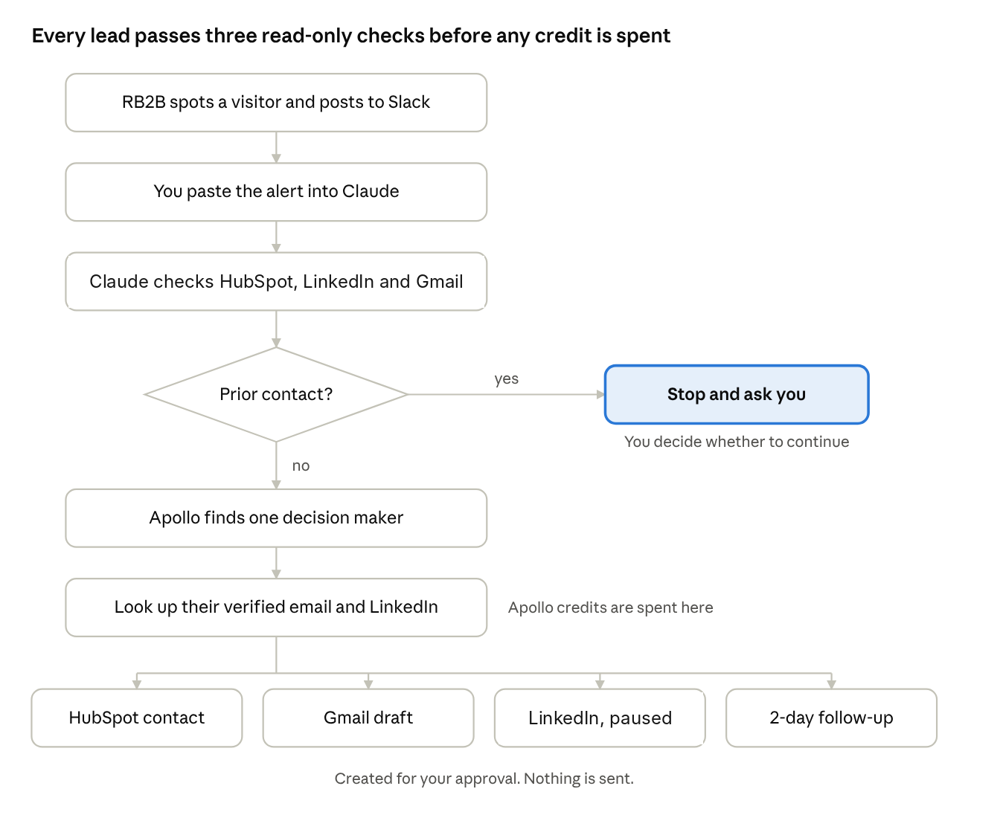

TEG is an official member of the Anthropic Claude Partner Network. We build Claude Skills, Projects, and MCP integrations for B2B ops teams. See our full Claude services.
How do you turn an RB2B alert into outreach with Claude?
You paste each RB2B alert into a Claude skill that does the research a salesperson would do by hand. It checks HubSpot, our proprietary LinkedIn automation system and Gmail for any past contact, finds one decision maker in Apollo if the company is new, then prepares an email draft, a paused LinkedIn sequence and a follow-up task. Nothing is sent until a person approves it.
Most of what we sell is the idea that a small team with Claude can do the work of a bigger one, so when we wanted more leads we tried to prove it on ourselves. We installed RB2B on theendurancegroup.com, and it tells us which companies, and sometimes which people, land on our site. The hard part is what happens next, which we covered for a client in From Anonymous Website Visitor to Assigned CRM Lead. A visitor tool nobody acts on is just a feed that gets ignored.
Why is an RB2B alert not a lead yet?
RB2B sends each visitor to a Slack channel. It looks great for about a day. Then every alert becomes a small chore: do we already know them, who there should we contact, and what do we even say? Answering by hand means opening HubSpot, our proprietary LinkedIn automation system, Gmail and Apollo for every company, so on a small team most alerts get a glance and nothing more.
What are the five steps in the workflow?
We built one Claude skill that runs the whole sequence, wired to the tools we already use. Here is the path every lead follows:
- Send Claude the alert. Today we paste the RB2B Slack notification into Claude.
- Run three read-only checks. Claude searches HubSpot, our proprietary LinkedIn automation system and Gmail for any past contact with that company.
- Stop if there is prior contact. If we have ever emailed, met with or messaged anyone there, Claude tells us what it found and waits.
- Find one decision maker. Only if the company is new does it spend an Apollo credit, on one person. That is usually the CEO or president at a small organization, and an operations or technology lead at a bigger one.
- Prepare four things for approval. A HubSpot contact, a Gmail draft, a paused lead in our proprietary LinkedIn automation system with the invite and both follow-ups filled in, and a HubSpot task to follow up in two days.

Slack is the starting point for now, but it does not have to stay manual. The same skill can be configured so Claude runs every lookup automatically the moment a lead hits, with the drafts and tasks waiting for you. A person still approves before anything is sent.
What rules does the skill follow?
We are an AI partner, so we hold ourselves to the standard we would set for a client. The skill has a short list of rules it cannot break:
- It never sends an email. Gmail gets a draft, and a person reads it first.
- LinkedIn leads are added paused. Nothing reaches anyone until it is unpaused.
- It never mentions the website visit. Every message is about something relevant to the person's organization, so the outreach does not feel like surveillance.
- It contacts one person per company, never a whole team.
- It does not invent facts, clients or results.
- It checks before it spends, so credits are never used on someone we already know.
What happened on the first real run?
Our first test was a small public-sector organization that RB2B flagged as a visitor from an information technology organization. We had no idea who it was.
Claude checked HubSpot and found nothing. It then checked all 12 of our LinkedIn campaigns and found nothing there either. Then a Gmail search turned up something the first two had missed: we had cold emailed someone there in 2024 and never heard back.
That is exactly the kind of mistake that makes outreach feel sloppy, so the skill now searches Gmail before it spends anything. Because the old email was unanswered, I chose to continue with a fresh angle.
Claude picked the organization's president as the decision maker, since for a small team that is the CEO equivalent. It found an email address and LinkedIn profile, created the HubSpot records, wrote the draft, loaded the LinkedIn sequence and set the follow-up task. I reviewed the messages and then unpaused the LinkedIn lead. My part was reading drafts and approving them, not switching between four tabs.
What do we still not know?
This is early. One run does not prove a pipeline, and we have not yet measured how many of these conversations turn into booked calls. We will share the numbers once there are enough to mean something.
How can you build something similar?
The point is not RB2B or any single tool. The slow part of lead generation is the research between the alert and the first message, and that is exactly what Claude is good at. Write down the steps your best salesperson already follows as a skill, and let Claude run them while you keep the final say. If you are weighing which tools to connect, start with our guide to the best MCP servers for B2B sales and CRM teams.
Start small, the way we did: one source of leads, one set of checks, one kind of message, all in draft until you trust it. If you would like help building something like this, start with our free AI Value Assessment. We will look at where your team spends its time and show you where Claude can take some of it back.
Frequently asked questions
Can Claude work with RB2B?
Yes. RB2B posts each identified visitor to Slack, and today we paste that alert into Claude. It can also be configured so Claude runs the lookups automatically as soon as a lead hits. A Claude skill then checks HubSpot, our proprietary LinkedIn automation system and Gmail for existing contact, finds one decision maker in Apollo if the company is new, and prepares an email draft, a paused LinkedIn sequence and a follow-up task for you to approve.
Does RB2B have an MCP server?
RB2B has an MCP for its API, but it is tied to a separate API partner program, so we did not rely on it. Pasting the Slack alert into Claude works fine, and the lookups can be triggered automatically when a lead hits.
How many website visitors does RB2B identify?
Not most of them. RB2B only identifies US visitors, visitors on a VPN are missed, and its own plan pages list identification rates well under half of traffic. Check RB2B's pricing page for current plans and limits.
Does Claude send the outreach automatically?
No. In our workflow Gmail only receives a draft, LinkedIn leads are added paused, and a person reads and approves every message before anything reaches the prospect.
Related reading
From Anonymous Website Visitor to Assigned CRM Lead
How we turned an ignored visitor spreadsheet into a filtered CRM feed for a client.
The best MCP servers for B2B sales and CRM teams
Which MCP servers actually connect Claude to the sales tools your team already uses.